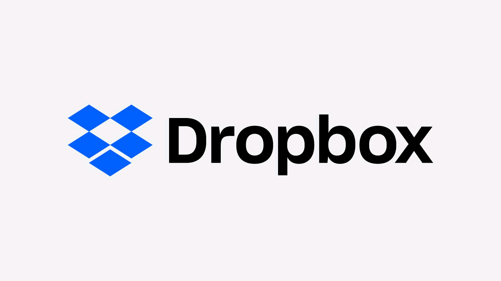

Dropbox est un espace de travail moderne conçu pour réduire les tâchesn d'administration et vous ermettre de vous concentrer sur ce qui compte. Avec Dropbox ; accéder à vos fichiers sur l'Ordinateur est très facile et gratuit.
Dropbox est un service de stockage et de partage de copies de fichiers locaux en ligne proposé par Dropbox, inc , entreprises localisée à San Francisco , en Californie . Dropbox fournit des logiciels client pour Microsoft Windows , Mac OSX , GNU/Linux , Android , IOS , BlackBerry OS , ainsi qu'une interface Web .